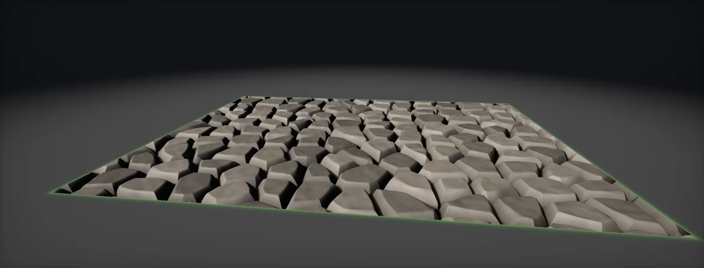

Fast Parallax Occlusion Mapping
What makes parallax occlusion mapping fast: adaptive step counts, starting at the highest point of the map, coarse steps with secant refinement, analytic heights instead of fetches, gradients taken outside the loop and distance fades, built in Unity HDRP and Unreal.

POM in one paragraph, and where the time goes
Parallax occlusion mapping marches the view ray through a height map in tangent space: step down layer by layer, read the height at each step, stop where the ray drops below it, interpolate. Every step is a texture fetch whose UV depends on the previous step, so the fetches cannot overlap: the cost is close to steps × fetch latency, per pixel, on every pixel of the surface.
is not one algorithm but a set of ways to spend fewer of those steps. The first is the cheapest: use many steps only where the ray is long.
Looking straight at the surface, the ray crosses the height range over a tiny horizontal distance, and a handful of steps find the hit. At grazing angles the same range spans a long stretch of texture. HDRP's Lit POM and Unreal's ParallaxOcclusionMapping function both do this already, with min and max step counts.
Start at the highest point
Standard POM starts the march at height 1, the top of the possible range. Most height maps never use the top: a brick wall that peaks at 0.6 wastes 40 % of its layers on empty space. Store the map's real maximum (one number per texture, from the authoring tool) and start there. This is the bounding slab idea applied to POM:
The same goes for the bottom: if the map never goes below 0.2, the ray can be treated as hitting there at the latest. Authoring helps too: normalising the height map to the full 0–1 range in Substance and setting the depth in the material gives the most precision per step.
Coarse steps, then secant
Plain POM finds the first layer below the surface and interpolates once between it and the layer before: that is already one secant step. Doing two or three of them, each with a fresh fetch, gets the hit much closer than doubling the linear steps would:
The catch is thin features: if a ridge is narrower than a coarse step, the linear search walks past it and no refinement brings it back. Choose the coarse step from the smallest feature you need, and let the secant steps buy the precision. Relief mapping (Policarpo and Oliveira) uses binary search for the same refinement; it is more robust on noisy maps and converges more slowly.
Heights without textures
When the height can be written as a formula, the loop needs no fetches at all: a sine for waves, a smoothstep cone for an iris, a rounded-box profile for tiles, a distance to a grid for grout. Arithmetic is cheap and its results are available immediately, so a dozen steps of a short formula usually cost less than three dependent fetches:
A hybrid gives most of the look for one fetch: march the analytic macro shape, then read a detail height once at the hit and push the hit along the ray by that amount. The detail shifts with the view like parallax but does not occlude itself, which is rarely noticeable on small features. The raymarched iris uses exactly this: the iris profile is a formula, the crypts are one fetch.
Gradients and mips
Texture sampling picks a mip level from how fast the UV changes between neighbouring pixels (mips). Inside the POM loop, neighbours stop at different steps, so their UVs jump. The GPU reads those jumps as a fast-changing UV and picks a very blurry mip: the step edges turn into blocky, blurred seams.
The fix is a few characters: compute ddx and ddy of the original UV once, before the loop, and sample with explicit gradients (SampleGrad, SAMPLE_TEXTURE2D_GRAD, Texture2DSampleGrad). The mip then matches the surface, not the march. Do the same for every texture sampled at the parallax UV afterwards.
Fade with distance
Parallax is a close-up effect. A few metres away the offset is a fraction of a pixel and the normal map carries the look alone. Fade the depth and the step count together over a distance range, and skip the march completely beyond it:
Fading only the steps leaves the full depth with too few samples (stair steps at a distance); fading only the depth still pays for the loop. Fade both. A matching fade on the material's displacement or tessellation keeps the transition invisible.
The recipe
Each technique attacks a different part of the cost. In order of payoff:
| Technique | Saves | Costs | Use when |
|---|---|---|---|
| Adaptive step count | steps at steep views (most of the screen) | one lerp | always |
| Start at Hmax | the empty top of the range | one number per map | maps that never reach white |
| Coarse steps + secant | most fine steps | 1–3 extra fetches | smooth height maps |
| Analytic height | every fetch in the loop | arithmetic per step | shapes you can write as a formula (iris, tiles, waves) |
| Gradients outside the loop | blurry mip seams | two derivative instructions | always (it is a correctness fix) |
| Distance fade | the march on distant pixels | one distance | always; fade the depth too |
| Early out | rays that cannot hit | one test | bounded areas (an iris, a decal) |
Measure in a GPU capture (RenderDoc, PIX, Unreal Insights, Unity's Frame Debugger with a profiler) rather than by eye: the cost scales with screen coverage, so test with the surface filling the screen at a grazing angle, the worst case.
Build it in Unity HDRP
HDRP's Lit shader has POM built in (Displacement Mode: Pixel displacement) with a fixed step range. The custom route adds the optimisations of this unit: a start height from the map's real maximum, adaptive steps, secant refinement, gradients taken once and a distance fade. Written for Unity 6 with HDRP 17; Unity 2022 LTS works the same apart from a few renamed menu entries.
- Built-in first: in an HDRP/Lit material set Displacement Mode to
Pixel displacement, assign the Height Map, and set Minimum Steps and Maximum Steps (HDRP picks between them by view angle) and the Amplitude. Keep this material to compare cost and look. - Find the map's highest value once: open the height map in an image editor (or Substance) and note its maximum; most maps never reach pure white. That number is
MaxHeight. - Put
FPOM.hlslinAssets/Shaders/. Create the graph: in the Project window, Create > Shader Graph > HDRP > Lit Shader Graph. Open it and check the Graph Inspector > Graph Settings. Add properties: a Texture2DHeightMap(sRGB off at import), FloatsDepth(0.05),MaxHeight,MinSteps(4),MaxSteps(16),Refinements(2),FadeStart(5) andFadeEnd(15). - Distance: a Distance node between Position (World) and Camera Position, or the length of the View Vector. In the graph, add a Custom Function node. Set Type to
File, Source toFPOM.hlsland Name toFPOM(without the_floatsuffix). Add the inputs HeightMap (Texture2D), UV (Vector 2), ViewDirTS (Vector 3), Depth (Float), MaxHeight (Float), MinSteps (Float), MaxSteps (Float), Refinements (Float), Distance (Float), FadeStart (Float), FadeEnd (Float) and the outputs ParallaxUV (Vector 2), HeightAtHit (Float), in that order and with those types: they must match the function's parameters. ViewDirTS: View Direction in Tangent space. - Sample base colour, normal and mask maps at ParallaxUV. Use the same sampler state; the maps follow the height map exactly.
- Compare with the built-in material in the Rendering Debugger or a GPU capture: the custom version should need fewer samples at steep views and none beyond FadeEnd.
#ifndef ATLAS_FPOM_INCLUDED
#define ATLAS_FPOM_INCLUDED
// Fast parallax occlusion mapping for a height map (white = high).
// - starts at the highest point the map contains (MaxHeight), not at the top of the box
// - adaptive step count from the view angle
// - coarse linear steps, then secant refinement
// - UV gradients taken once outside the loop (SAMPLE_TEXTURE2D_GRAD), so mips stay stable
// - fades the effect out with distance (FadeStart..FadeEnd, in metres)
// ViewDirTS: View Direction in Tangent space (towards the camera), normalised in here.
void FPOM_float(UnityTexture2D HeightMap, float2 UV, float3 ViewDirTS, float Depth, float MaxHeight,
float MinSteps, float MaxSteps, float Refinements, float Distance, float FadeStart, float FadeEnd,
out float2 ParallaxUV, out float HeightAtHit)
{
float3 V = normalize(ViewDirTS);
float fade = 1.0 - saturate((Distance - FadeStart) / max(FadeEnd - FadeStart, 1e-3));
float depth = Depth * fade;
float2 dUVdx = ddx(UV), dUVdy = ddy(UV); // once, before any loop or branch
ParallaxUV = UV; HeightAtHit = 1.0;
[branch] if (depth <= 1e-5) return; // far away: no parallax at all
// UV shift per unit of depth along the view ray (layers go down from the surface)
float2 uvPerDepth = -V.xy / max(V.z, 0.05) * depth;
// the ray can only hit below the highest point of the map
float layerStart = 1.0 - saturate(MaxHeight); // depth (0 top .. 1 bottom) where marching starts
int steps = (int)max(round(lerp(MaxSteps, MinSteps, saturate(V.z))), 1.0);
float dl = (1.0 - layerStart) / steps;
float lPrev = layerStart, hPrev = 1.0; // h: height of the map minus height of the ray
float lCur = 1.0, hCur = -1.0;
{
float2 uv = UV + uvPerDepth * layerStart;
hPrev = (1.0 - layerStart) - SAMPLE_TEXTURE2D_GRAD(HeightMap.tex, HeightMap.samplerstate, uv, dUVdx, dUVdy).r; // >= 0
}
[loop]
for (int i = 1; i <= 64; i++)
{
if (i > steps) break;
float l = layerStart + dl * i;
float2 uv = UV + uvPerDepth * l;
float d = (1.0 - l) - SAMPLE_TEXTURE2D_GRAD(HeightMap.tex, HeightMap.samplerstate, uv, dUVdx, dUVdy).r; // ray height - map height
if (d <= 0.0) { lCur = l; hCur = d; break; }
lPrev = l; hPrev = d;
}
// hPrev is the last "above" distance (positive); refine between lPrev and lCur
hPrev = max(hPrev, 1e-5);
[loop]
for (int k = 0; k < 4; k++)
{
if (k >= (int)Refinements) break;
float lm = lerp(lPrev, lCur, hPrev / max(hPrev - hCur, 1e-6));
float2 uv = UV + uvPerDepth * lm;
float dm = (1.0 - lm) - SAMPLE_TEXTURE2D_GRAD(HeightMap.tex, HeightMap.samplerstate, uv, dUVdx, dUVdy).r;
if (dm > 0.0) { lPrev = lm; hPrev = dm; } else { lCur = lm; hCur = dm; }
}
float lHit = lerp(lPrev, lCur, hPrev / max(hPrev - hCur, 1e-6));
ParallaxUV = UV + uvPerDepth * lHit;
HeightAtHit = 1.0 - lHit;
}
#endifDepth Offset (graph setting) makes contact shadows and intersections follow the parallax surface; derive it from HeightAtHit. For an analytic height (no texture), replace the samples with a function, as the eye unit does: the loop then costs only arithmetic.
Build it in Unreal Engine
Unreal ships a ParallaxOcclusionMapping material function with min and max steps; the Custom node below adds the same optimisations as the HDRP route. Written for Unreal Engine 5.6 and later. Substrate is production-ready from 5.7; check Project Settings > Rendering > Substrate to see which material model a project uses.
- Built-in first: add the ParallaxOcclusionMapping function (Engine content), connect a Texture Object of the height map, set Height Ratio, Min Steps and Max Steps, and use its Parallax UVs output for all texture samples.
- Custom version: add a Custom node with
FPOM.ush. Add an inputTexand connect a Texture Object of the height map; Unreal then makesTexSampleravailable in the code. Other inputs:UV(TexCoord),V,Depth,MaxHeight,MinSteps,MaxSteps,Refinements,Fade. Output TypeCMOT Float 2. V: CameraVector through a Transform node (World to Tangent).Fade: 1 − saturate((distance − FadeStart) / (FadeEnd − FadeStart)), with the distance from Camera Position to Absolute World Position in centimetres.- Sample base colour, normal and ORM at the output UV. Compare the two versions with Shader Complexity and a GPU capture (ProfileGPU).
// Custom node "FPOM". Inputs: Tex (Texture Object, the height map), TexSampler is created automatically
// as TexSampler; UV (float2), V (float3, CameraVector transformed to Tangent space), Depth, MaxHeight,
// MinSteps, MaxSteps, Refinements, Fade (float, 0..1 from distance). Output Type: CMOT Float 2 (parallax UV).
float3 v = normalize(V);
float depth = Depth * Fade;
if (depth <= 1e-5) return UV;
float2 dx = ddx(UV), dy = ddy(UV);
float2 uvPerDepth = -v.xy / max(v.z, 0.05) * depth;
float layerStart = 1.0 - saturate(MaxHeight);
int steps = (int)max(round(lerp(MaxSteps, MinSteps, saturate(v.z))), 1.0);
float dl = (1.0 - layerStart) / steps;
float lPrev = layerStart, lCur = 1.0, hCur = -1.0;
float hPrev = max((1.0 - layerStart) - Tex.SampleGrad(TexSampler, UV + uvPerDepth * layerStart, dx, dy).r, 1e-5);
for (int i = 1; i <= 64; i++)
{
if (i > steps) break;
float l = layerStart + dl * i;
float d = (1.0 - l) - Tex.SampleGrad(TexSampler, UV + uvPerDepth * l, dx, dy).r;
if (d <= 0.0) { lCur = l; hCur = d; break; }
lPrev = l; hPrev = d;
}
for (int k = 0; k < 4; k++)
{
if (k >= (int)Refinements) break;
float lm = lerp(lPrev, lCur, hPrev / max(hPrev - hCur, 1e-6));
float dm = (1.0 - lm) - Tex.SampleGrad(TexSampler, UV + uvPerDepth * lm, dx, dy).r;
if (dm > 0.0) { lPrev = lm; hPrev = dm; } else { lCur = lm; hCur = dm; }
}
return UV + uvPerDepth * lerp(lPrev, lCur, hPrev / max(hPrev - hCur, 1e-6));Pixel Depth Offset from the hit height lets the parallax surface intersect other geometry; enable it only where needed.
Sources and further reading
The formulas and engine details in this unit come from these references. Engine documentation changes between versions.
- PaperDynamic parallax occlusion mapping with approximate soft shadowsNatalya Tatarchuk · I3D 2006POM with adaptive sampling rates.
- PaperReal-time relief mapping on arbitrary polygonal surfacesPolicarpo, Oliveira, Comba · I3D 2005Linear search followed by binary search refinement.
- DocsHDRP Lit: displacement mode and pixel displacementUnityThe built-in POM settings used for comparison.
- DocsUnreal Engine ParallaxOcclusionMapping material functionEpic GamesThe engine function and its inputs.